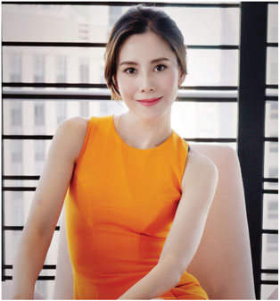
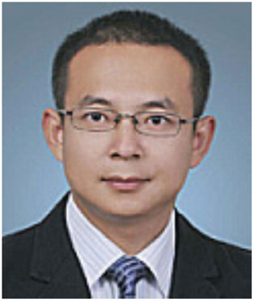
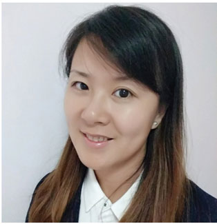
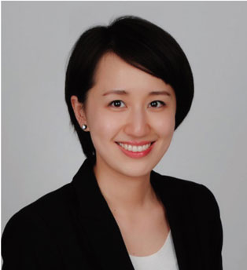
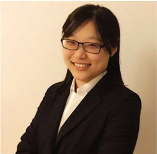

投资组合
公司战略
团队成员
联系我们
Peofessionals
管理团队
张斐赟
作为中赛信合的创始人,致力于将公司打造成优质、专业的资产管理 和投资平台。张女士专长于TM7、文化传媒、商业地产等领域,任南 方媒体融合基金、数元一期二期科技投资基金及恒赛青熙健康产业基 金合伙人及投委会委员。现出任金地商置(HK00535)非执行董事。 张女士毕业于复旦大学新闻学院新闻学专业,英国爱丁堡大学工商 理学院。

管理团队
傅丰国
曾长期担任平安资产管理公司直接投寳部投资总监之职,并在2012年入榜福布斯中国最佳私募股权投资基金管理人。成功案 例包括一号店的投资和沃尔玛对其的收购兼并、上海家化项目的收购、江粉磁材、金科地产、众业达的上市投资和济宁矿业 的战略投资等。傅先生擅长的行业领域包括消费和高端制造。傅先生早年分别在罗兰贝格管理咨询公司担任资深金融投资顾 问,负麦收购兼并金融服务向中国企业提供金融解决方案,包括直接投资、股权融资、债务融资、兼并收购以及海外上市, 项目包括招商集团、尚德太阳能、药明康德和中国金属等海外上市公司。傅先生拥有美国华盛顿大学工商管理硕士学位和复 旦大学金融工程学硕士学位。
管理团队
安然
拥有10年以上投资经历,曾在慧限投资、瑞华会计事务所等知名企业 担任高层职位。安先生成功主导和参与长城影视、郁金香传媒、联通 测试、希力药业十几个项目的投资,取得了优异的投资收益。他也宫 带领均胜汽车借壳上市,负责复兴集团、宝钢集团、中航集团等大型 集团下属的众多公司审计。安先生还参与了太极计算机股份有限公司 伊PO、宝钢收购宁波钢铁、滇能集团国有股权转让等众多重大项目审 计。安先生毕业于华东师范大学,理学学士,经济学硕士。

管理团队
许薇薇
曾担任上药集团财务总监,精通並擅长上市公司的财务管理,会计合 规,企业兼并重组,筹融资,税务筹划,公共关系维护等。许女士拥 有澳大利亚 LA TROBE大学工商管理硕士,∥FA英国管理会计注册师 ,S∥FM国际财务管理师,高级经芦师等专业資格和资质。
管理团队
刘任俭
曾任海通证券运营中心总经理。她先后在中国人民银行沈阳分行、中 国银行沈阳分行、海通证券股份有限公司等机构。中国银行沈阳分行 工作期问,历任沈阳分行稽核处副处长、处长等职务。海通证券工作 期问,历任总公司国际业务部副总经理、稽核部总经理、资金计划部 总经理、运营中心总经理等职务。刘女士于东北财经大学金融专业、 南京陆军指挥学院法律专业学习,本科毕业。上海财经大学EMBA专 业学习,获硕士学位。
执行团队
吴佳纯/财务风控负责人
中国注册会计师,曾任职于瑞华会计师事务所(特殊普通合伙)上会会 计师事务所(特殊普通合伙),从事会计、审计工作12年。担任北京医 集团、奥特佳、耀皮玻璃、中通地铁等国有企业及上市公司项目负 责人负责上市公司的年报审计工作;参与豫园商城年报审计,运盛实 业、华芳纺织重大资产重组工作,;负麦华铭智能、九九久PO审计; 担任安威士、莱奕亭等公司新三板挂牌审计负责人及签字会计师,具 有丰富的审计工作经验。

执行团队
曹文欣/法务合规负责人
曹女士曾供职于普华永道会计师事务所,负麦基金的架构设计和基金 运营中相关的法律合规事务处理。曹女士毕业于伦敦大学国王学院国 际金融法和国际税法专业,并拥有复旦大学法学和会计学双学位。

执行团队
夏勤璐/投资总监
夏勤璐女士目前负责广东南方媒体融合发展投资基金投资工作。拥有 法律职业资格等资质。曾经在外资上市公司对外投资部服务,主要负 责企业对外投资及对欧洲企业或国内企业的收并购事宜。2010年进入 私募股权投资领域,服务于浦东科投及旗下慧限资本,在任职期问参 与投资郁金香传媒、天络行等众多项目。夏女士于2013主导与新华通 讯社新媒体中心一起设立新华华媒投资管理有限公司并担任公司董事 。丁2016年参与设立广东媒体融合发展投资基金并担任副总经理,在 此期问曾主导先后投资了南方新媒体、当虹科技、4k花园等项目。
执行团队
孙易捷/投资总监
英国特许证券投资师,孙女士先后就职于摩根大通(伦敦)证券交易与销 售部、瑞银集团(伦敦)投行部、上海华宝信托创新信托业务部、唐胜投 资集团等,擅长公司治理结构设计及商业模式分析。曾在唐胜投资集 团主导参与了永乐唐胜文化产业基金、上海老龄委引导的唐胜鸿钧养 老产业基金的投资及运营工作,投资管理规模15亿元人民市,具有丰 富的养老及大健康行业投资经验。孙女士毕业于伦敦帝国理工大学, 金融学硕士,
